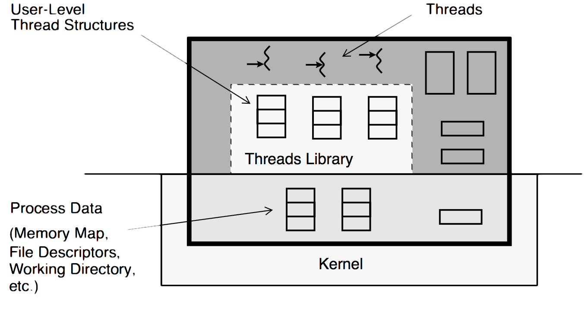

Introduction to Multi-threaded Programming
A thread is a light-weight entity, comprising the registers, stack, and some other data. The rest of the process structure is shared by all threads: the address space, file descriptors, etc. Much (and sometimes all) of the thread structure is in user- space, allowing for very fast access.
All threads in a process share the state of that process. They reside in the exact same memory space, see the same functions, see the same data. When one thread alters a process variable (say, the working directory), all the others will see the change when they next access it. If one thread opens a file to read it, all the other threads can also read from it.

The Value of Using Threads
A point to keep in mind here is that you are not replacing simple, non-threaded programs with fancy, complex, threaded ones. You are using threads only when you need them to replace complex or slow non-threaded programs. Threads are really just one more way you have to make your programming tasks easier.
The main benefits of writing multithreaded programs are:
Performance gains from multiprocessing hardware (parallelism)
Increased application throughput
Increased application responsiveness
Replacing process-to-process communications
Efficient use of system resources
Simplified realtime processing
Simplified signal handling
The ability to make use of the inherent concurrency of distributed objects
There is one binary that runs well on both uniprocessors and multiprocessors
The ability to create well-structured programs
There can be a single source for multiple platforms